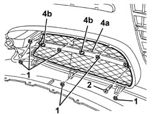

7055A39 LEFT SIDE FRONT GRILLE - R.R.
- Path
- Procedures > 70 FITTINGS > 7055 MOULDING AND PROTECTION > 7055A exterior mouldings > 7055A39 LEFT SIDE FRONT GRILLE - R.R.
- Kind
- repair procedure (removal / refitting; the operation number is the code)
- Applies to
- all engines; all production periods
- Interactive page
- https://sloeber94.github.io/elrnDB-a147/en/#/3025898
Applies to: all engines; all production periods
 Removing
Removing
 Refitting
Refitting7055B54 under-engine guard - r r
1. Remove the retaining clip.
2. Unscrew the bolts.
3. Remove the grille.
4. If necessary, prise up panel (4a) by releasing from retainers (4b).

Applies to: all engines; all production periods
Refitting
RemovingCheck that the grille is not damaged.
If the panel was removed, refit and do up the retainers.
Fit the grille and secure it with the bolts and retaining clips.